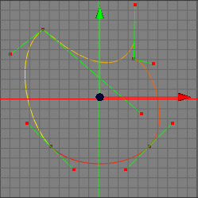

接線の長さをそろえる ツール
時には、ベジエスプラインの接線が同じ長さを持つことが役に立つでしょう。こういった作業の場合には、接線の長さをそろえるツールを使用する事ができます。
 
編集モード
接線の長さをそろえる は全ての編集モードで使用できます。ポイントモードでしかコントロールポイントや接線が見えないので、ポイントモードで使用するのが良いでしょう。このスプラインツールは、ロースプラインオブジェクトでのみ使用できます。


接線の長さをそろえる を使用するには、まずスプラインの接線を同じ長さにしたいコントロールポイントを選択します。選択してから、"ツール スプラインツール接線の長さをそろえる" メニューコマンドを呼び出します。選択した全てのコントロールポイントの接線は、同じ長さになります。何も選択していない場合には、全ての接線にコマンドが実行されます。
スプラインツール接線の長さをそろえる" メニューコマンドを呼び出します。選択した全てのコントロールポイントの接線は、同じ長さになります。何も選択していない場合には、全ての接線にコマンドが実行されます。
補助キー
-
- なし
プロパティ
- なし